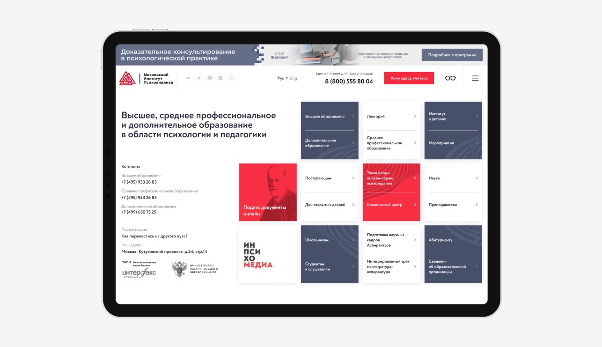
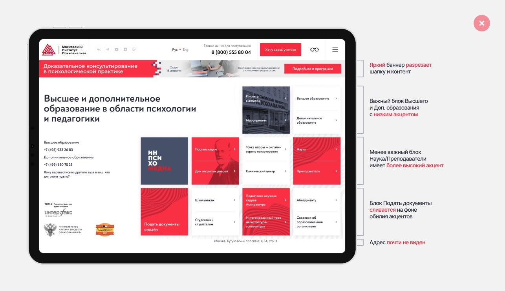
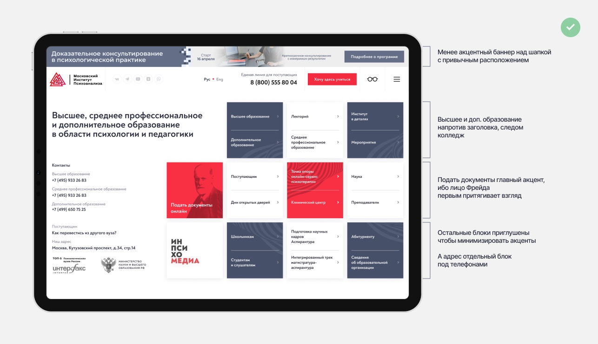
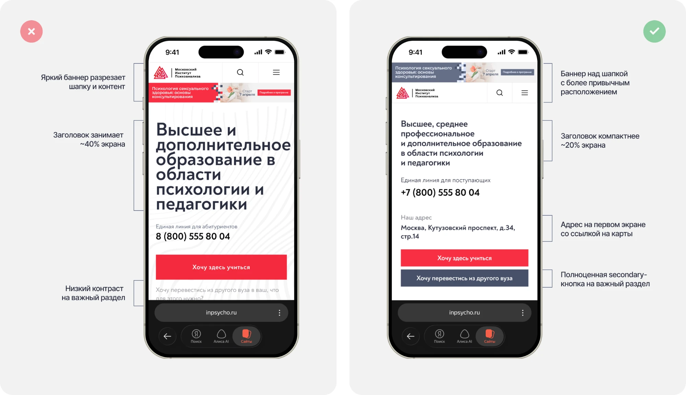
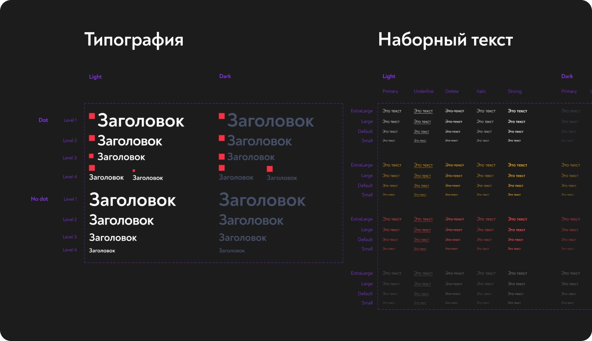

Редизайн главной страницы сайта университета

За неделю перестроил главную страницу вуза так, чтобы абитуриент с первого экрана видел, как поступить, позвонить и доехать. Встроил новое направление (колледж) без роста страницы и попутно собрал UI-кит сайта, которого раньше не существовало.
Задача и ограничения
Задача от маркетинга была узкой: добавить на главную новый колледж (СПО) и актуализировать ссылки.
- Одна неделя: от постановки задачи до макета, переданного в разработку.
- Минимальное вмешательство: менять только самое важное, без новых блоков и роста страницы.
- Без аналитики на старте: доступа к данным на этапе дизайна не было, поэтому решения опирались на аудит и юзабилити-тест прототипов.
Что я заметил по ходу задачи
Главная бизнес-цель вуза - набор новых студентов, а главная страница - точка входа для абитуриентов. Поэтому, встраивая колледж, я посмотрел на первый экран глазами абитуриента и проверил его тремя вопросами: как поступить, как позвонить и где находится вуз. Ответы находились с трудом:

- Акценты расставлены хаотично: красными были «Наука» и «Аспирантура», а основные пути поступления сливались со второстепенными разделами.
- Главное действие спрятано: «Подать документы онлайн» стояло в нижнем левом углу сетки, у края первого экрана.
- Баннер разрывает страницу: порядок «шапка → рекламный баннер → контент» отрывал навигацию от содержимого.
- Адрес почти не виден: мелкий серый текст под сеткой.
- Мобильная версия теряет первый экран: заголовок в шесть строк занимал почти половину экрана, а «Хочу перевестись из другого вуза» был серым текстом, который не читается как ссылка и обрезается внизу.
Ничего из этого не входило в ТЗ. Я предложил исправить это сверх задачи, потому что каждый пункт мешал главному - заявке на поступление.
Гипотезы и решения
Наблюдения я свёл в два решения, а колледж встроил внутри первого, не добавляя новых блоков. Аналитики на этапе дизайна не было, поэтому решения я проверял юзабилити-тестом (подробнее ниже).

Раздел №1. Работа с акцентами в равнозначной сетке
Акценты в сетке не совпадали с важностью разделов. Главные пути поступления, «Высшее образование» и «Дополнительное образование», были белыми карточками с низким акцентом, а второстепенные «Наука» и «Преподаватели» - красными. «Подать документы онлайн» стояло в нижнем углу и сливалось на фоне обилия красного.
При этом колледж по задаче нужно было добавить так, чтобы не раздуть и без того плотную сетку.
Гипотеза
Если акцентов станет меньше и каждый совпадёт с приоритетом раздела, абитуриент сразу найдёт пути поступления и главное действие, а колледж - рядом с ними, без новых блоков.
Решение
- «Высшее образование» и «Дополнительное образование» встали в первую карточку, напротив заголовка: взгляд идёт слева направо и после заголовка сразу попадает на них. Следом - «Лекторий» и «Среднее профессиональное образование», то есть колледж
- красный остался только у двух блоков: «Подать документы онлайн» и «Точка опоры» - онлайн-сервис психотерапии, который вуз тоже продвигает
- главный из двух акцентов - «Подать документы»: блок переехал на уровень контактов, а вместо абстрактного паттерна на нём теперь Фрейд. Лица притягивают взгляд первыми, а Фрейд - узнаваемое лицо психоанализа
- остальные блоки приглушил: тёмные и белые карточки вместо красных, чтобы избавиться от обилия акцентов
- адрес вынес отдельным блоком в колонку контактов под телефонами, там же появился телефон колледжа
- баннер поднял над шапкой и сделал спокойнее по цвету
- количество карточек не изменилось
Компромисс
«Наука» и «Аспирантура» потеряли акцент. Для имиджа вуза они важны, но не ведут к заявке напрямую.

Раздел №2. Редизайн первого экрана на мобилке
Большая часть трафика мобильная, а пространство первого экрана тратилось впустую. При этом привлечение новых студентов - одна из главных бизнес-целей вуза.
Гипотеза
Если убрать с первого экрана второстепенное и отдать место действиям, абитуриент с телефона сразу видит, как позвонить, где находится вуз и как поступить или перевестись.
Решение
- пересобрал шапку: убрал слишком широкие отступы
- поднял рекламный баннер на самый верх страницы и предложил делать баннеры спокойнее по цвету: так он не разрезает страницу на две части и стоит там, где его привыкли видеть по большинству сайтов
- сжал заголовок вдвое: ~20% высоты экрана вместо ~40%
- вывел адрес на первый экран: человек сразу видит, где вуз, и по касанию открывает Яндекс Карты
- привёл телефоны на всём сайте к единому формату +7
- сделал компактный мобильный вариант кнопки «Хочу здесь учиться»: при сборке UI-кита выяснилось, что у части элементов не было адаптивных версий
- превратил «Хочу перевестись из другого вуза» в полноценную secondary-кнопку под главным CTA
Итог
Заголовок, телефон, адрес и оба целевых действия помещаются в один экран без прокрутки.
Как я проверял и согласовывал
Концепт и созвон:
Сначала я собрал концепт: на старой главной отметил проблемы, особенно на мобилке, и рядом показал решения. Обсудили на созвоне с отделом маркетинга, направление одобрили.
Юзабилити-тест:
Затем я сделал полноценный вариант и сравнил два кликабельных прототипа в Figma: текущую главную вуза и мою версию. За неделю полноценное исследование не провести, а доступа к аналитике не было, поэтому я выбрал самый быстрый способ проверить, находят ли люди нужное.
- Участники: 10 человек - коллеги, знакомые вне дизайна и моя жена.
- Задания: найти на странице конкретный раздел или действие.
- Что замерял: время выполнения по секундомеру и путь курсора по макету.
Результат:
На текущей версии те же задания занимали в 2–3 раза больше времени, чем на новой.
Ограничения метода:
Выборка маленькая, и это не реальные абитуриенты в живом трафике, а знакомые в спокойных условиях. Тест показал направление, но не заменяет аналитику.
Согласование:
Финальный макет и прототип отправил отделу маркетинга, правки приняли и передали в разработку.
UI-кит сайта
Сайт собирался без общей системы, поэтому параллельно с задачей я собрал UI-кит из 15 компонентов: кнопки, типографика, хлебные крошки, слоты, табы, коллапс, скролл, уведомления, элементы форм, форма обратной связи, карточки преподавателя и направления, видео, изображения, шапка. Следующие задачи маркетинга собираются из готовых элементов, а не рисуются заново.

Пример компонентов из UI-кита
Результаты
- За неделю перестроил первый экран главной в рамках минимального вмешательства.
- Встроил колледж без новых блоков.
- Проверил решения юзабилити-тестом на 10 людях: на новой версии задания выполняли в 2–3 раза быстрее.
- Перестройку сетки и мобильного экрана предложил сверх ТЗ, маркетинг принял правки.
- Собрал UI-кит сайта из 15 компонентов, которого раньше не существовало.
- По данным Яндекс Метрики после релиза выросли переходы в «Высшее образование» и «МИП Колледж», клики на «Подать документы онлайн» и на адрес вуза.